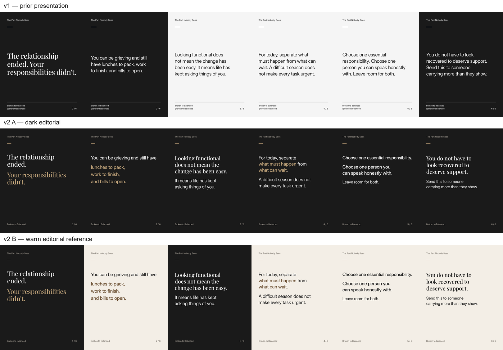
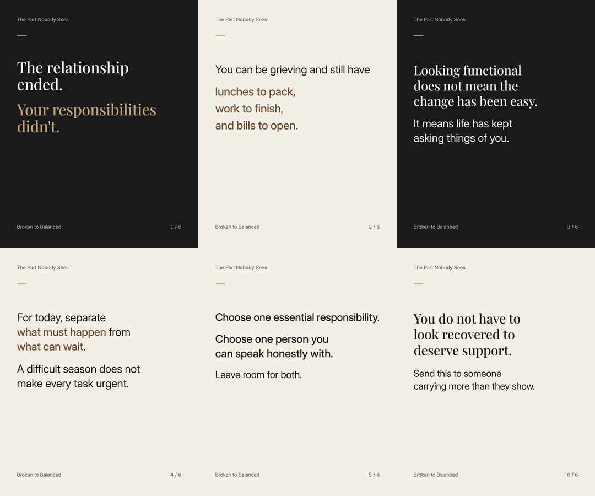
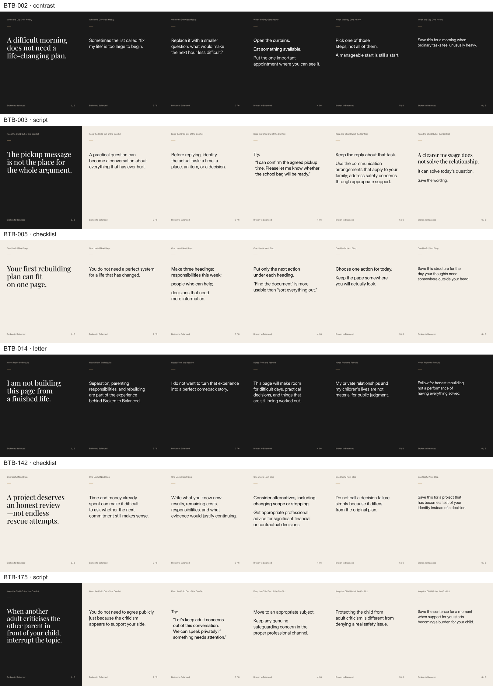

Review exports only. Copy, IDs, dates and approval gates are unchanged. No approved logo or C scene is claimed.
Full 180-post gallery · Proof manifest · C availability and B fallback
48 full-size proof PNGs are separate from the 1,080 primary PNGs. Comparison and phone/crop derivatives are inspection aids.

Full-size A: Slide 1 · Slide 2 · Slide 3 · Slide 4 · Slide 5 · Slide 6
Full-size B: Slide 1 · Slide 2 · Slide 3 · Slide 4 · Slide 5 · Slide 6

Central square · Central 3:4. The hook remains intact; these are stress tests, not primary artwork.

No C scene proof exists. The complete B reference is the usable text-first fallback; the three-way pilot is not fully prepared.